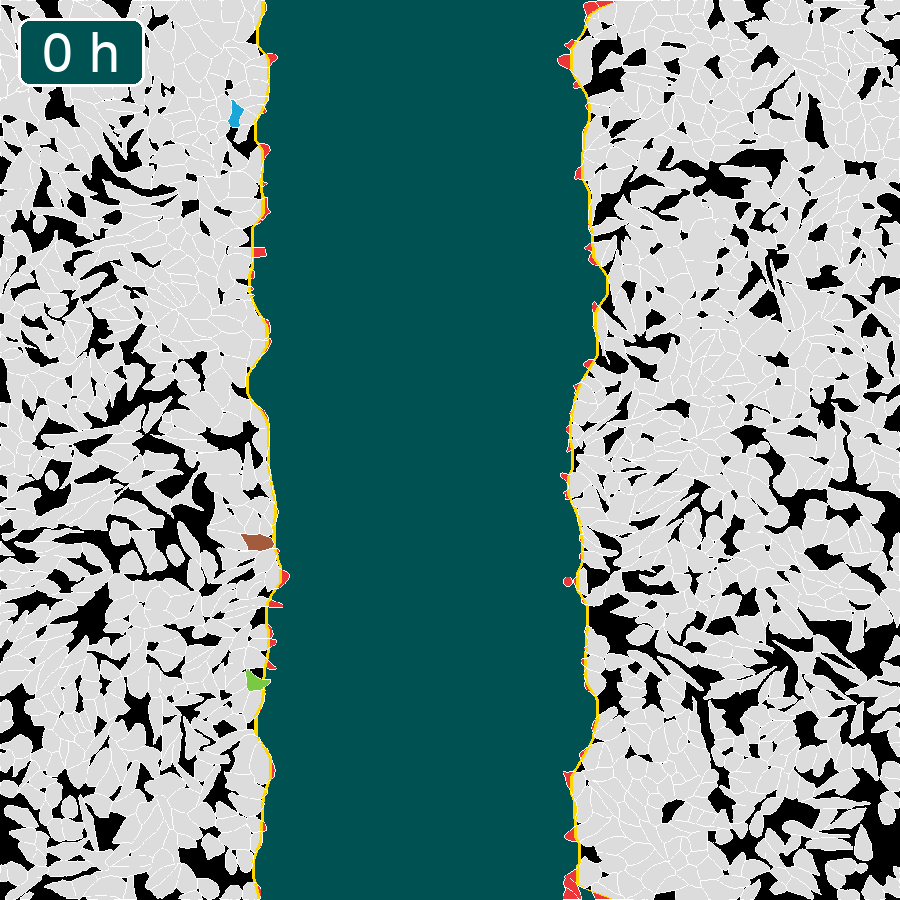

Zelltracking
Dieses Video zeigt exemplarisch das automatisierte Zell-Tracking anhand von drei Zellen über einen Zeitraum von 12 Stunden. Die zum Zeitpunkt t = 0 definierte Wundkante wird als gelbe Linie dargestellt. Alle Zellen, die in diesen Wundbereich eintreten, werden rot markiert. Die für das Tracking ausgewählten Zellen werden über den gesamten Beobachtungszeitraum verfolgt.
